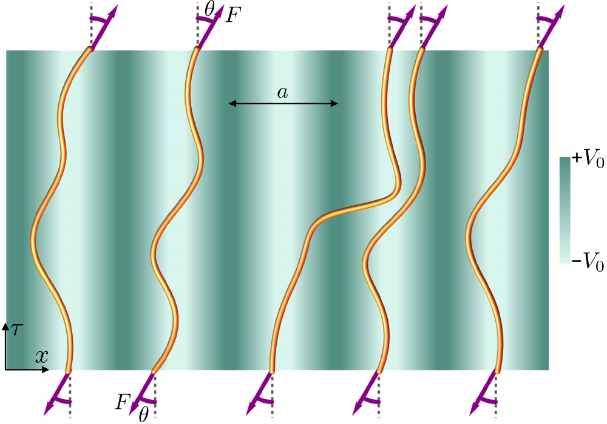
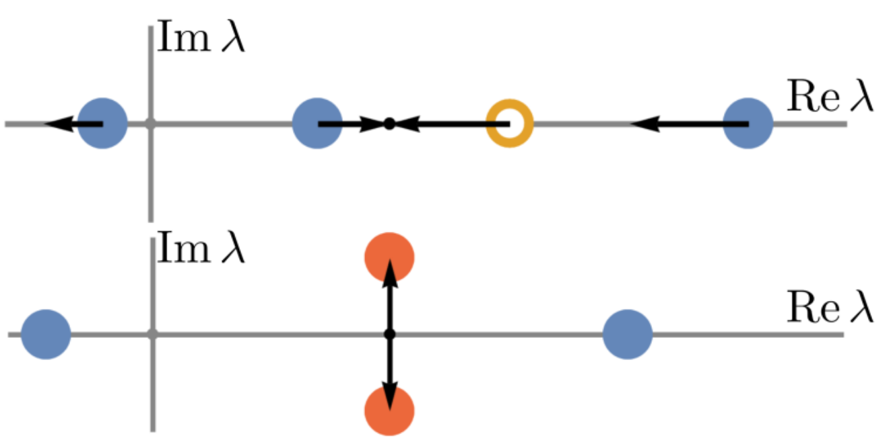
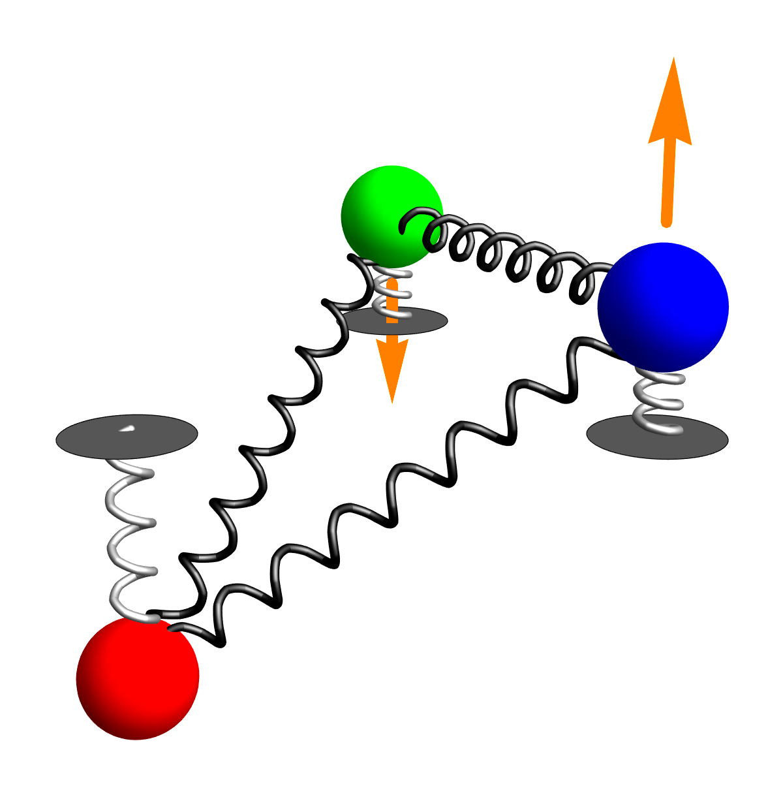
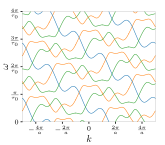
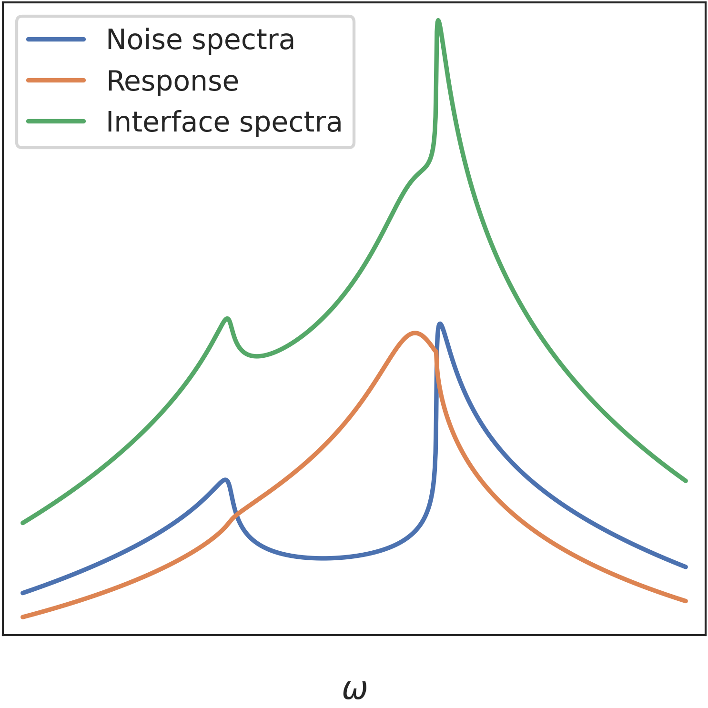

Research
I have organized my research into three connected themes. A common thread—one that emerged somewhat unexpectedly—is the search for collective variables, response functions, and symmetries that make complex nonequilibrium dynamics predictable. Below, I highlight this connection by pairing the concrete question behind each project with the broader question it addresses.
Non-reciprocal transitions in active and soft matter
How do non-reciprocal interactions change stability, localization, and response?
An interaction is non-reciprocal when one component affects another differently from how it is affected in return. Such interactions are common in active systems and can generate pattern formation, phase transitions, edge currents, and amplification.
One example of a non-reciprocal system is a collection of fluctuating polymer chains under shear (left figure): the shear biases their diffusion in one direction. At sufficiently strong shear, the polymers undergo a phase transition that makes them delocalize throughout the substrate. The transition occurs when two real eigenvalues of an associated linear operator merge and become complex, as shown in the right figure. These spectral transitions of pseudo-Hermitian operators control the onset of instability in many non-reciprocal systems.


Related work: directed-polymer delocalization and pseudo-Hermitian degeneracies.
Waves in metamaterials with spatio-temporal order
How can microscopic dynamics be designed to produce a desired wave response?
A dynamical metamaterial is an engineered assembly of active or non-reciprocal units whose collective motion produces unusual wave behavior.
One simple building block consists of three coupled oscillators driven in a traveling-wave pattern (left). Although each oscillator follows ordinary Newtonian mechanics, together they can be tuned so that waves travel in only one direction. Putting such units together creates metamaterials whose order is intertwined across space and time. Its wave band band structures (right) host complicated topological windings and describe both non-reciprocal wave propagation and robust, fractionally quantized transport. These ideas also apply to active systems with phase-locked dynamics, such as beating cilia and active spinner arrays.


Related work: non-reciprocal parametric resonance, the space-time Floquet operator, and electron vortex beams.
Morphodynamics of finite biological collectives
What can the shape fluctuations of a biological collective reveal about the laws it follows?
The physics of biological self-organization asks how living systems create large-scale order, shape, and motion from local interactions. Most theories focus on behavior within the bulk, while much less is known about the role of interfaces, where the collective meets its surroundings.
The shape of wild milling fish schools (left figure) can be described by a continuum description of collective variables such as density and flow. In this theory, fluctuations in density and velocities of fish within the school propogate to the boundary and excite it much like an earthquake. The boundary has its own natural ways of responding (right figure, which is admittedly a bit abstract) by deforming and relaxing. The observed shape fluctuations arise from the interplay of these bulk disturbances and boundary responses.
Because the bulk and boundary dynamics are so intimately involved, the fluctuating shape acts as a probe of the entire school. It allows both bulk and boundary material properties to be inferred from changes in the school's outline alone.


Related work: The shape of fish schools (in preparation) and quantum state tomography (which relates to inference procedures).